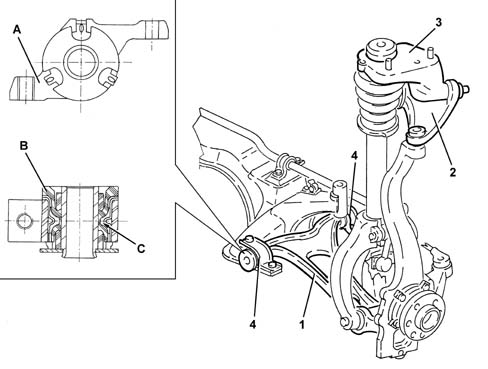

4410B FRONT SUSPENSION WISHBONES
- Path
- Descriptions > 44 SUSPENSION AND WHEELS > 4410 FRONT SUSPENSION > 4410B FRONT SUSPENSION WISHBONES
- Kind
- system description
- Applies to
- all engines; all production periods
- Interactive page
- https://sloeber94.github.io/elrnDB-aGt/en/#/125000376
Applies to: all engines; all production periods
SPECIFCATIONS
GENERAL VIEW

1 - Lower track control arm
2 - Upper track control arm
3 - Shock absorber mounting shell
4 - Hydroelastic bush
A - Anchorage
B - Hydroelastic block
C - GLYCOL
The front suspension track control arms are shaped with three hinge points in a triangular shape; for this reason they are also called triangles.
The lower arm, of forged steel, is hinged to the suspension frame bu means of two flexible bushes at the two points which represent the base of the triangle, and at the vertical link via a ball joint at the point which represents the apex of the triangle.
The rear flexible bush is hydroelastic to absorb longitudinal impacts as much as possible, and it consists of a hydroelastic block and the support for the attachment to the bodywork.
The upper arm is hinged to the shock absorber mounting shell, by means of two flexible bushes at the two points which represent the base of the triangle, and to the vertical link by means of a ball joint.